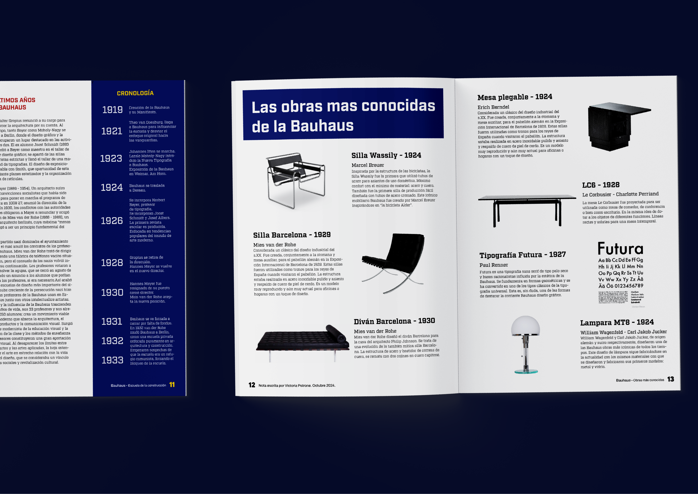
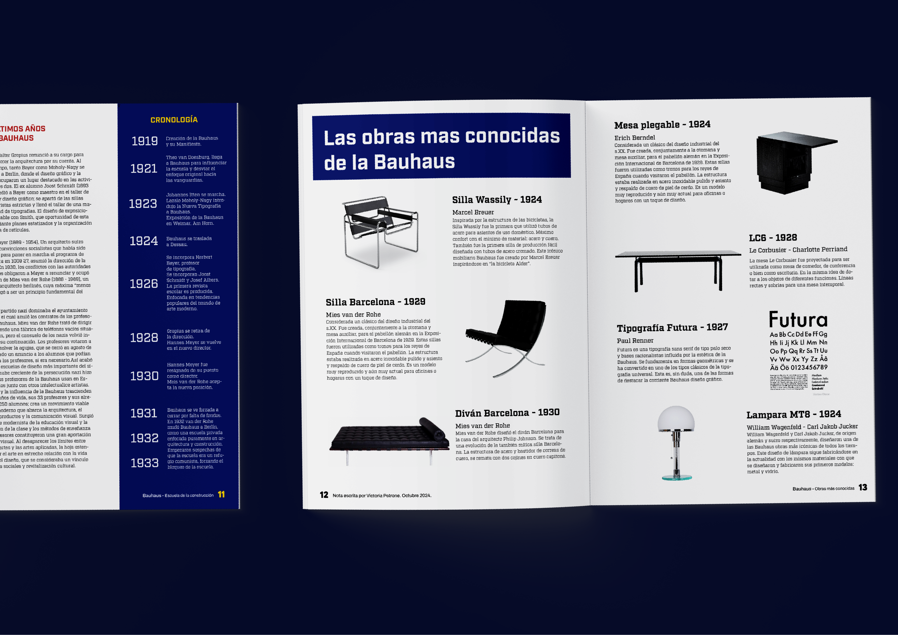
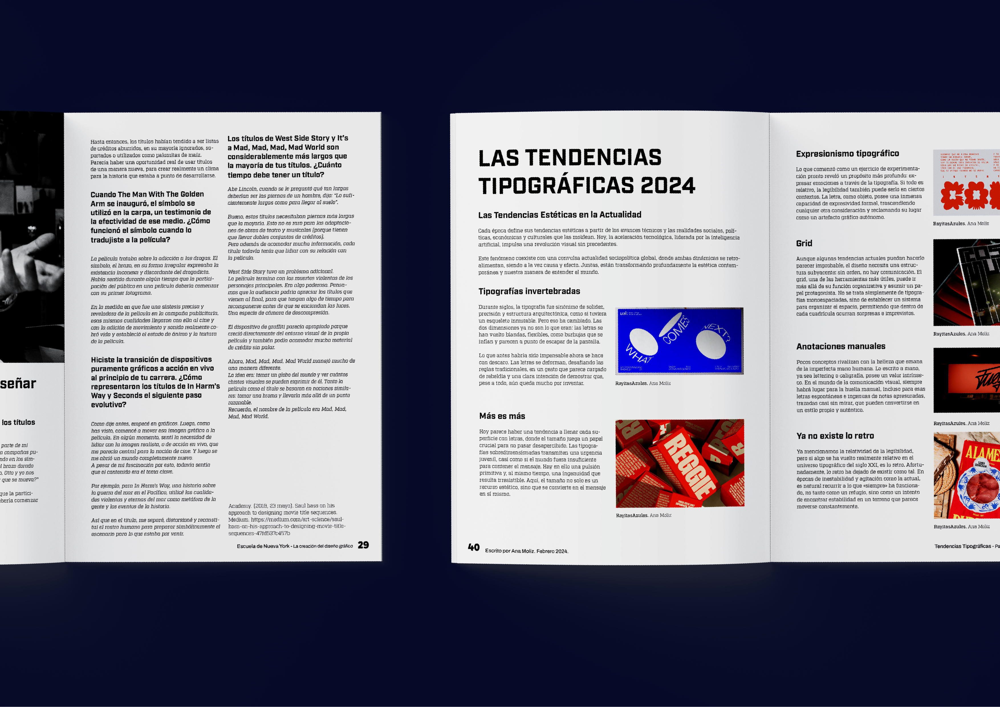
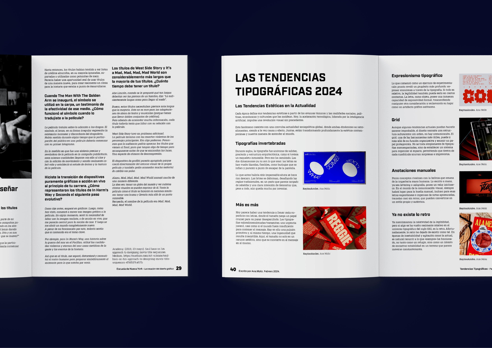

 


Diseño editorial 2
Aventuras en la huerta con Minian
¡Conoce a Minian, el gato más curioso y aventurero! Acompáñalo en su mágico recorrido por la huerta,
donde aprenderás a plantar tus propios alimentos, descubrir secretos de la naturaleza y preparar
deliciosas recetas saludables.
Si amas los gatos, la naturaleza y la comida sana, este libro es para ti.
¡Una historia divertida y educativa que inspirará a grandes y pequeños!
¿Listo para sembrar nuevas aventuras con Minian?
Consíguelo ya y deja que Minian te enseñe el arte de cultivar con amor.


Diseño de identidad 1
Afiche sobre la marcha de la diversidad
Como todos los años, el último viernes de setiembre volvemos a las calles de Montevideo. Marcharemos HASTA QUE LOS DERECHOS SEAN HECHOS. Porque los derechos no se cumplen. Porque las leyes deben ser implementadas. Basta de levantar banderas de colores una vez al año sin acciones que lo respalden. Luchamos por todos los derechos para todas las personas.
El Art Nouveau (del francés “arte nuevo”) fue un movimiento artístico renovador que apareció en Europa durante el período de fin de siglo (fin de siècle en francés) y la belle époque (que significa “la bella época”), (24 px)
es decir, entre finales del siglo XIX y principios del siglo XX, y se manifestó en pintura, escultura, arquitectura, artes gráficas, artes decorativas y todo tipo de diseño (diseño interior, de moda y demás). (20 px)
Este movimiento se caracterizó por el rechazo al estilo neoclasicista y al estilo romántico. En su lugar proponía formas sinuosas, diseños fluidos y orgánicos inspirados en el mundo natural, con líneas curvas, dinámicas y asimétricas y el uso de materiales modernos como el hierro, el vidrio y la cerámica. (16 px)
Otros nombres para el mismo movimiento, según el país, fueron Jugendstil en Alemania, Nieuwe Kunst en Países Bajos, Sezessionstil en Austria, Modern Style en Reino Unido, Stile liberty o Floreale en Italia y Modernismo en España (que no es el llamado movimiento moderno). (12 px)
Tipografía 2
Creación de tipografía
Tipografía inspirada en la epoca del diseño Art Nouveau a prinicipios del siglo xx en Francia. Tipografía asimetrica, curvada y con decoracion floral.

Técnicas de impresión 1
Experimentación de impresiones
Realización de cuatro elementos con distintos metodos de impresion desde sello, grabado, serigrafía con poliester y serigrafía con mascara de papel.